Browse the collection
kaleidoscope-flowers
Click the link to view actual shirt. Each shirt is made to order and available in multiple colors.
Violet Radiance – Kaleidoscope Flower Art
Brilliant purples, delicate lavender petals, and a glowing golden center create a dazzling floral kaleidoscope. A bold, colorful design for flower lovers and anyone who loves wearable art!
Shop This T-Shirt ↗
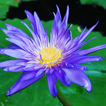
Water Lilies (Nymphaea)
Aquatic flowering plants known for their floating, rounded leaves and beautiful, multi-petaled blooms. Their flowers appear in shades of white, pink, yellow, blue, and purple, often surrounding a golden center. They thrive in calm freshwater ponds and lakes, adding vibrant color and natural beauty.
View Original Water Lily Photograph
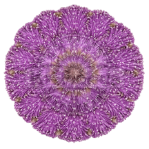
Purple Sunshine – Kaleidoscope Flower Art
A dazzling burst of lavender and purple! Delicate, feathery Sunshine Mimosa blossoms create a mesmerizing kaleidoscope of color and texture. Inspired by Florida's native wildflowers, this vibrant design brings whimsical beauty and flower power to your wardrobe. Stand out from the crowd! Grab yours today and wear a little piece of Florida's natural beauty!
Shop This T-Shirt ↗
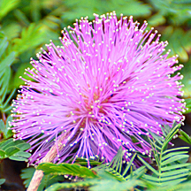
Sunshine Mimosa (Mimosa strigillosa)
Sunshine Mimosa, also called Powderpuff Mimosa, is a low-growing Florida native wildflower known for its delicate pink-to-lavender, fluffy, ball-shaped blossoms. Its feathery green leaves fold when touched. Blooming from spring through fall, this hardy groundcover attracts butterflies and bees, thrives in sunny locations, and tolerates drought once established.
View Original Powderpuff Photograph
Crimson Elegance – Kaleidoscope Flower Art
Make a bold statement with this stunning kaleidoscope of deep crimson roses! Rich red petals and intricate floral patterns create a captivating design bursting with passion, romance, and elegance. Perfect for rose lovers and anyone who wants to stand out with beautiful, one-of-a-kind wearable art!
Shop This T-Shirt ↗
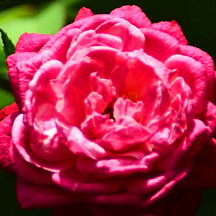
Roses (Rosa)
Flowering shrubs known for their fragrant, layered petals and often thorny stems. Their blooms appear in shades of red, pink, white, yellow, orange, and purple. Symbols of love and beauty, roses thrive in sunny locations with well-drained soil and are prized for their elegance and vibrant colors.
View Original Rose Photograph
Tropical Pink Paradise – Kaleidoscope Flower Art
Bursting with brilliant pink petals, sparkling water droplets, and lush tropical greens, this dazzling Plumeria kaleidoscope brings paradise to life! A bold, mesmerizing floral design that's perfect for tropical flower lovers and anyone who loves colorful, wearable art. Don't settle for ordinary! Add a splash of tropical paradise to your wardrobe. Order yours today and turn heads wherever you go!!
Shop This T-Shirt ↗
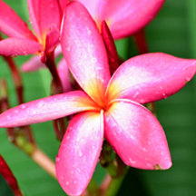
Plumeria (Plumeria spp.)
Plumeria, also known as Frangipani, is a tropical flowering tree or shrub prized for its fragrant, five-petaled blossoms in shades of white, yellow, pink, and red. Its glossy green leaves and colorful flowers add exotic beauty to tropical landscapes. Thriving in warm, sunny climates, Plumeria attracts pollinators and is traditionally used in Hawaiian leis.
View Original Plumeria Photograph
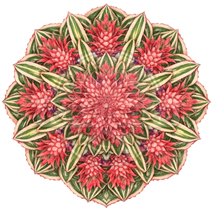
Tropical Pineapple Paradise– Kaleidoscope Flower Art
Bursting with brilliant coral-pink pineapple blooms, lush emerald greens, and striking cream-striped leaves, this dazzling tropical kaleidoscope is a feast for the eyes! Layers of exotic blossoms swirl into a spectacular floral masterpiece overflowing with color, texture, and island charm. Why wear ordinary when you can wear paradise?!
Shop This T-Shirt ↗
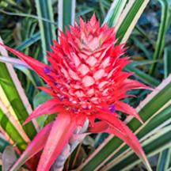
Pineapple (Ananas comosus)
Pineapple is a tropical perennial plant in the bromeliad family, known for its spiky green leaves, vibrant pink-to-purple flowers, and sweet, juicy fruit. Each pineapple develops from numerous small flowers that fuse into a single fruit. Thriving in warm, sunny climates and well-drained soil, this exotic plant is prized for its ornamental beauty and delicious tropical flavor.
View Original Pineapple Photograph
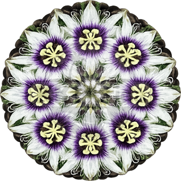
Passion Flower– Kaleidoscope Flower Art
Celebrate nature's extraordinary beauty with this stunning passionflower kaleidoscope design. Brilliant purple centers, delicate white petals, and soft yellow accents come together in a mesmerizing floral mandala. A unique piece of wearable botanical art, perfect for flower lovers, gardeners, and anyone who appreciates nature's intricate patterns. Add a little flower power to your wardrobe!
Shop This T-Shirt ↗
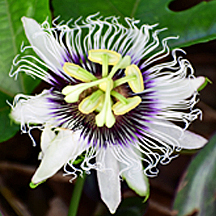
Passionflower (Passiflora)
The passionflower (Passiflora) is a striking flowering vine known for its delicate white petals, intricate purple and white corona filaments, and distinctive yellow-green reproductive structures. Its exotic blooms attract butterflies, bees, and other pollinators. It is also a host plant for the larvae of the longwing butterflies. Zebra longwing, Julia and Gulf Fritilliary.
View Original PassionFlower Photograph
Orchid Elegance – Floral Kaleidoscope
Vibrant pink orchids, rich magenta accents, and delicate touches of gold blend together in this captivating floral kaleidoscope. Layer upon layer of graceful petals creates a mesmerizing pattern that celebrates the exotic beauty of nature. Perfect for orchid lovers, gardeners, and anyone who loves colorful, unique wearable art. Let your style bloom!
Shop This T-Shirt ↗
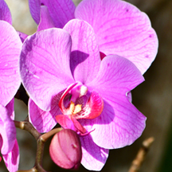
Moth Orchid(Phalaenopsis)
The moth orchid (Phalaenopsis) is a tropical orchid featuring broad, rounded pink petals with delicate magenta veins and a richly colored central lip. Known for its graceful, long-lasting blooms, this epiphytic plant naturally grows on trees in warm, humid environments.
View Original Orchid Photograph
Orchid Elegance – Floral Kaleidoscope
Rich purple orchids, radiant golden centers, and lush green foliage intertwine in this breathtaking kaleidoscope design. Exotic beauty meets intricate symmetry, creating a stunning piece of wearable botanical art. Perfect for orchid enthusiasts, nature lovers, and anyone who appreciates bold floral designs. Bring a touch of tropical elegance to your wardrobe!
Shop This T-Shirt ↗
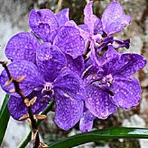
Orchid (Orchidaceae)
The orchid (Orchidaceae) is an exotic flowering plant prized for its vibrant purple blooms, intricate petal patterns, and distinctive central lip. Many tropical orchids grow as epiphytes, attaching themselves to trees and absorbing moisture and nutrients from their surroundings..
View Original Orchid Photograph
Orchid Elegance – Floral Kaleidoscope
Delicate lavender petals, striking plum-purple markings, and warm golden centers come together in this enchanting orchid kaleidoscope. Intricate layers of blossoms create a mesmerizing floral mandala, blending natural elegance with artistic symmetry. Perfect for orchid enthusiasts, flower lovers, and anyone who appreciates distinctive botanical art. Make a statement with nature’s own masterpiece!
Shop This T-Shirt ↗
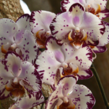
Moth Orchid (Phalaenopsis)
The spotted moth orchid (Phalaenopsis) features broad, creamy white petals adorned with deep purple speckles and irregular markings, accented by a golden-burgundy central lip. This tropical epiphytic orchid is prized for its exotic patterns, graceful flower sprays, and long-lasting blooms.
View Original Orchid Photograph
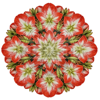
Amaryllis Radiance – Floral Kaleidoscope
Brilliant scarlet-red amaryllis blooms, creamy white starburst centers, and lush green accents come together in this striking floral kaleidoscope. Intricate symmetry and vibrant colors transform nature’s beauty into a captivating piece of wearable art. Perfect for flower lovers, gardening enthusiasts, and anyone who enjoys bold botanical designs. Brighten your wardrobe with this stunning floral creation!
Shop This T-Shirt ↗
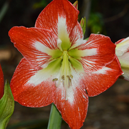
Amaryllis (Hippeastrum)
The amaryllis (Hippeastrum) is a bulbous flowering plant featuring large, trumpet-shaped blooms with brilliant scarlet-red petals, white star-shaped markings, and a pale green throat. Native to tropical and subtropical regions of the Americas, it is prized for its dramatic flowers and tall, sturdy stems.
View Original Amaryllis Photograph
Amaryllis on Fire – Floral Kaleidoscope
Ignite your style with this dazzling amaryllis kaleidoscope! Fiery orange-red petals and shimmering golden accents radiate outward in a spectacular floral mandala. Bursting with warmth, energy, and intricate detail, this unique design transforms nature’s brilliance into stunning wearable art. Perfect for flower lovers and anyone who loves bold, vibrant colors!
Shop This T-Shirt ↗
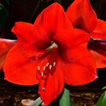
Amaryllis (Hippeastrum)
The red amaryllis (Hippeastrum) is a bulbous perennial featuring large, trumpet-shaped, scarlet-red flowers with prominent stamens and broad, velvety petals. Native to tropical and subtropical regions of the Americas, it produces spectacular blooms atop tall, leafless stems.
View Original Amaryllis Photograph
Hibiscus Sunrise – Floral Kaleidoscope
Capture the warmth of a tropical sunrise with this radiant hibiscus kaleidoscope. Golden yellow petals blend beautifully with peach, coral, and rosy pink hues, creating a mesmerizing floral mandala. Bursting with tropical charm and intricate detail, this unique wearable artwork is perfect for flower lovers and anyone who enjoys colorful, nature-inspired fashion. Bring a little sunshine to your wardrobe!
Shop This T-Shirt ↗
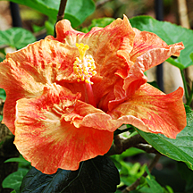
Tropical Hibiscus (Hibiscus rosa-sinensis)
The tropical hibiscus (Hibiscus rosa-sinensis) is an evergreen flowering shrub featuring large, ruffled blooms with vibrant orange, coral, and golden-yellow petals. Its prominent central staminal column and glossy green foliage make it a striking ornamental plant, thriving in warm, tropical and subtropical climates.
View Original Hibiscus Photograph
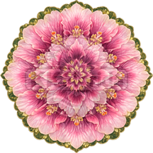
Hibiscus Blush – Floral Kaleidoscope
Soft pink petals, deep raspberry hues, and shimmering golden accents blossom into a breathtaking hibiscus kaleidoscope. Framed by rich green foliage, this intricate floral mandala captures the romance and elegance of tropical flowers. Perfect for flower enthusiasts, nature lovers, and anyone who appreciates unique wearable art. Add a touch of tropical beauty to your wardrobe!
Shop This T-Shirt ↗
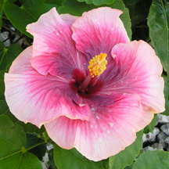
Tropical Hibiscus(Hibiscus rosa-sinensis)
The pink tropical hibiscus (Hibiscus rosa-sinensis) is an evergreen flowering shrub featuring large, delicate pink petals with deep burgundy centers and a prominent golden-yellow staminal column. Its showy blooms and lush green foliage thrive in tropical and subtropical climates, attracting butterflies, hummingbirds, and other pollinators.
View Original Hibiscus Photograph
Hibiscus Fireburst – Floral Kaleidoscope
Brilliant orange hibiscus blossoms edged in golden yellow burst against lush green foliage in this vibrant floral kaleidoscope. Intricate symmetry and rich tropical colors create a striking botanical masterpiece that radiates warmth and energy. Perfect for flower lovers, gardening enthusiasts, and anyone who enjoys bold wearable art. Bring a splash of tropical paradise to your wardrobe!
Shop This T-Shirt ↗
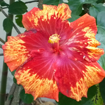
Tropical Hibiscus (Hibiscus rosa-sinensis)
The tropical hibiscus (Hibiscus rosa-sinensis) features large, ruffled scarlet-red petals with striking golden-yellow splashes and a prominent central staminal column. This evergreen flowering shrub thrives in warm climates and is prized for its dramatic, multicolored blooms and glossy green foliage.
View Original Hibiscus Photograph
Hibiscus Crimson – Floral Kaleidoscope
Vibrant crimson hibiscus blossoms dance among rich green foliage in this striking floral kaleidoscope. Bold red petals, intricate symmetry, and earthy textures capture the natural beauty of a tropical garden. Perfect for flower lovers, tropical plant enthusiasts, and anyone who appreciates distinctive wearable art. Make a bold statement with a touch of tropical paradise!
Shop This T-Shirt ↗
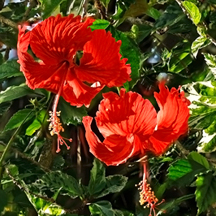
Tropical Hibiscus (Hibiscus rosa-sinensis)
The red tropical hibiscus (Hibiscus rosa-sinensis) is an evergreen flowering shrub featuring brilliant scarlet-red blooms with ruffled petals and elongated, protruding staminal columns. Its glossy green foliage and showy flowers thrive in warm climates, attracting butterflies and hummingbirds.
View Original Hibiscus Photograph
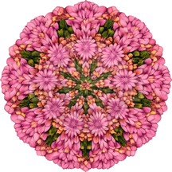
Curcuma Pink Paradise – Floral Kaleidoscope
Beautiful pink curcuma blossoms, soft peach accents, and lush green foliage intertwine in this enchanting floral kaleidoscope. Intricate patterns and vibrant tropical colors create a stunning piece of wearable botanical art. Perfect for flower lovers, gardeners, and anyone who appreciates nature’s beauty. Let your wardrobe blossom with tropical elegance!
Shop This T-Shirt ↗
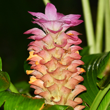
Curcuma Zingiberaceae)
Curcuma (Curcuma spp.) is a tropical perennial belonging to the ginger family (Zingiberaceae). It features upright, cone-shaped flower spikes with overlapping pink, peach, and green bracts that surround small true flowers. Its lush, broad foliage and colorful blooms thrive in warm, humid climates.
View Original Curcuma Photograph
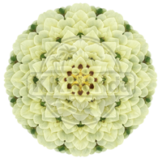
Cotton Blossom Serenity – Floral Kaleidoscope
Delicate ivory petals, soft buttery-yellow hues, and subtle green accents unfold in this elegant cotton blossom kaleidoscope. Beautifully layered petals create a mesmerizing floral mandala that radiates tranquility and natural grace. Perfect for flower lovers and anyone who appreciates the understated beauty of botanical art. Add a touch of timeless elegance to your wardrobe!
Shop This T-Shirt ↗
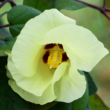
Cotton Gossypium)
The cotton plant (Gossypium spp.) is a flowering shrub belonging to the mallow family (Malvaceae). Its delicate, pale yellow flowers feature broad petals, a deep burgundy center, and golden stamens. After flowering, the plant develops seed capsules called bolls, which contain the soft, white cotton fibers.
View Original Cotton Photograph
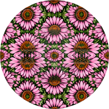
Coneflower Garden – Floral Kaleidoscope
Vibrant pink coneflowers with fiery orange centers bloom against lush green foliage in this captivating floral kaleidoscope. Intricate symmetry and rich natural textures capture the cheerful beauty of a wildflower garden. Perfect for flower lovers, gardeners, and anyone who appreciates colorful botanical art. Let your style bloom with this unique nature-inspired design!
Shop This T-Shirt ↗
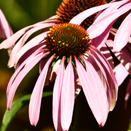
Coneflower (Echinacea purpurea))
The purple coneflower (Echinacea purpurea) is a native North American perennial featuring drooping pinkish-purple petals surrounding a prominent, spiny orange-brown central cone. A member of the daisy family (Asteraceae), it thrives in sunny locations and attracts butterflies, bees, and other pollinators.
View Original Coneflower Photograph
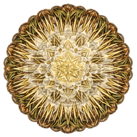
Midnight Bloom – Cereus – Floral Kaleidoscope
Vibrant pink coneflowers with fiery orange centers bloom against lush green foliage in this captivating floral kaleidoscope. Intricate symmetry and rich natural textures capture the cheerful beauty of a wildflower garden. Perfect for flower lovers, gardeners, and anyone who appreciates colorful botanical art. Let your style bloom with this unique nature-inspired design!
Shop This T-Shirt ↗
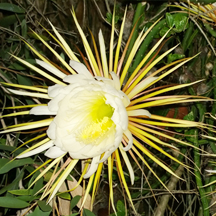
Cereus (Selenicereus grandiflorus))
The night-blooming cereus (Selenicereus grandiflorus), also known as Queen of the Night, is a climbing cactus featuring large, fragrant white flowers with long, slender golden-yellow outer tepals. Its spectacular blooms open after sunset and typically last only one night, attracting nocturnal pollinators such as moths.
View Original Cereus Photograph
Brownea Tropical Fireworks – Floral Kaleidoscope
Fiery orange Brownea blossoms burst against a backdrop of emerald green foliage in this electrifying floral kaleidoscope. Intricate, flame-like patterns radiate outward, capturing the vibrant energy of tropical nature. Perfect for flower lovers, gardening enthusiasts, and anyone who enjoys bold, eye-catching botanical art. Ignite your wardrobe with a splash of tropical brilliance!
Shop This T-Shirt ↗
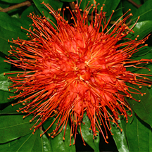
Brownea macrophylla Fabaceae)
Brownea macrophylla, commonly known as the Panama Flame Tree or Rose of Venezuela, is a tropical evergreen tree belonging to the legume family (Fabaceae). It produces spectacular, spherical clusters of fiery orange-red flowers with long, protruding stamens. Native to Central and South America, its nectar-rich blooms attract hummingbirds and butterflies.
View Original Brownea Photograph
Black-Eyed Susan Sunburst – Floral Kaleidoscope
Fiery red, brilliant orange, and golden-yellow Black-eyed Susan petals radiate outward in this spectacular floral kaleidoscope. Rich green foliage and intricate symmetry create a vibrant design reminiscent of a blazing summer sunset. Perfect for wildflower lovers, gardeners, and anyone who appreciates bold botanical art. Brighten your wardrobe with this radiant celebration of nature!
Shop This T-Shirt ↗
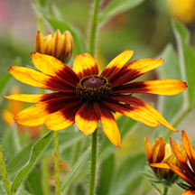
Black-eyed Susan (Rudbeckia hirta))
The Black-eyed Susan (Rudbeckia hirta) is a North American wildflower belonging to the daisy family (Asteraceae). This colorful variety features golden-yellow petals with deep burgundy markings surrounding a dark brown central cone. It thrives in sunny locations and attracts butterflies, bees, and other pollinators.
View Original Black Eyed Susan Photograph
Black-Eyed Susan Golden Garden – Floral Kaleidoscope
Cheerful golden-yellow Black-eyed Susans with rich chocolate-brown centers bloom against lush green foliage in this dazzling floral kaleidoscope. Intricate symmetry and sun-kissed colors capture the warmth and charm of a summer wildflower garden. Perfect for flower lovers, gardeners, and anyone who appreciates nature-inspired wearable art. Carry a little sunshine wherever you go!
Shop This T-Shirt ↗
Black-eyed Susan (Rudbeckia hirta))
The Black-eyed Susan (Rudbeckia hirta) is a native North American wildflower featuring bright golden-yellow petals with reddish-orange accents surrounding a raised, dark brown central cone. A member of the daisy family (Asteraceae), it flourishes in sunny gardens and meadows, attracting bees, butterflies, and other pollinators.
View Original Black Eyed Susan Photograph